Una lezione con la classe
180 attività con piano di lezione pronto da adattare, per primaria, secondaria di I e II grado.
I principali framework internazionali su intelligenza artificiale e competenze digitali, navigabili e collegati tra loro, con un catalogo di 180 attività per la classe.
180 attività con piano di lezione pronto da adattare, per primaria, secondaria di I e II grado.
Parti da una competenza, leggi obiettivi e livelli, ritrova le corrispondenze negli altri quadri.
Presentazioni con note del relatore da sfogliare o scaricare, per tutti i framework del sito.
Il profilo delle competenze in ogni framework, con grafico, CSV e un riepilogo unico con le attività suggerite. Le risposte restano nel tuo browser.
Tre attività senza dispositivi, in una sola lezione, con piano pronto da adattare.
Giochi interattivi nati dalle schede del Catalogo: si aprono con un link o un QR code, senza account.

Classifica oggetti e servizi quotidiani e motiva ogni scelta con un indizio. Da soli o in sessione di classe, su telefono, tablet o LIM.
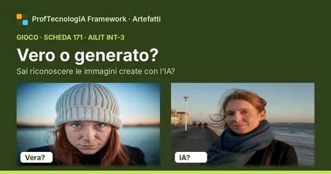
Volti, animali, luoghi e cibi: foto vere o generate con l'IA? Da soli o in sessione di classe, su telefono, tablet o LIM.
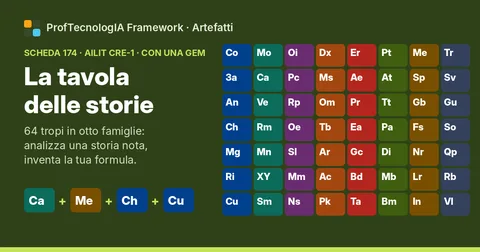
64 tropi in otto famiglie: scomponi una storia nota e trova la formula della tua. Da soli o in gruppo, senza account, su telefono, tablet o LIM.
Tavole da proiettare in collegio o in formazione, o da stampare: quale framework scegliere, come arrivare alla lezione, i concetti chiave e gli strumenti del sito.
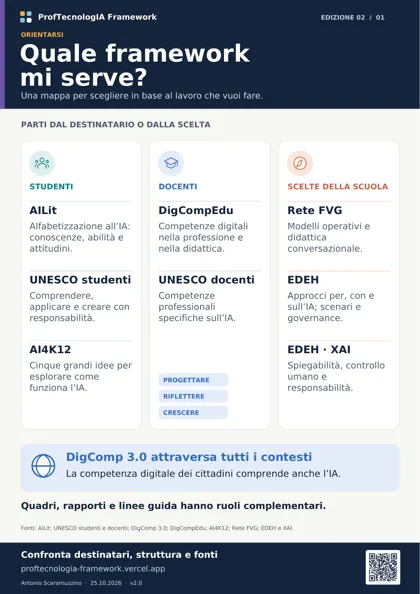
Quale framework mi serve?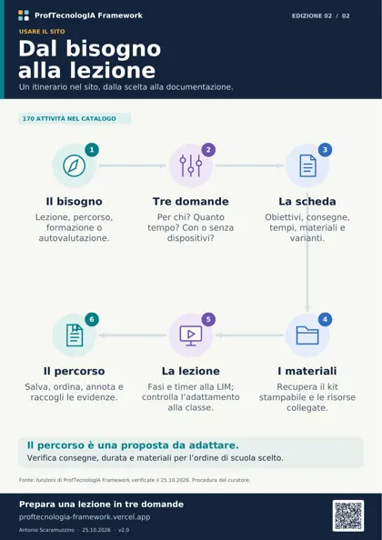
Dal bisogno alla lezione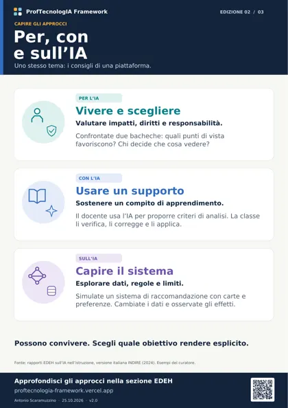
Per, con e sull’IA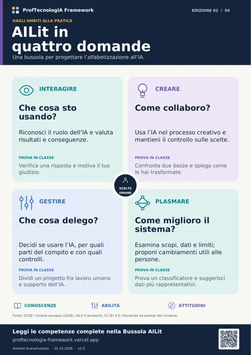
AILit in quattro domande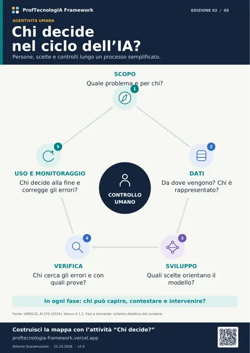
Chi decide nel ciclo dell’IA?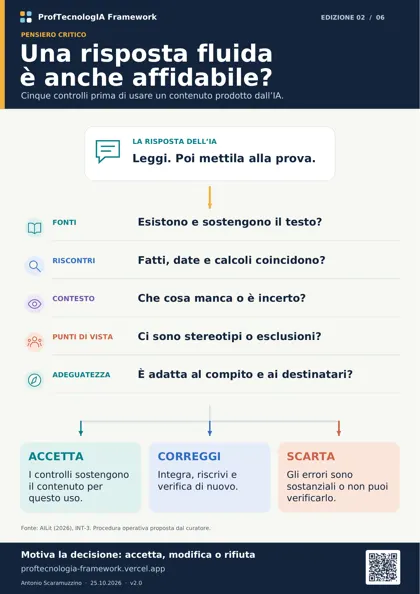
Una risposta fluida è anche affidabile?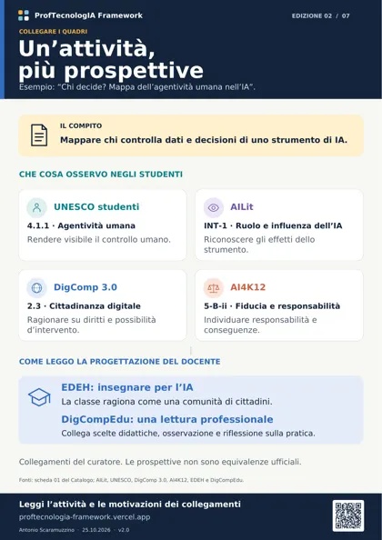
Un’attività, più prospettive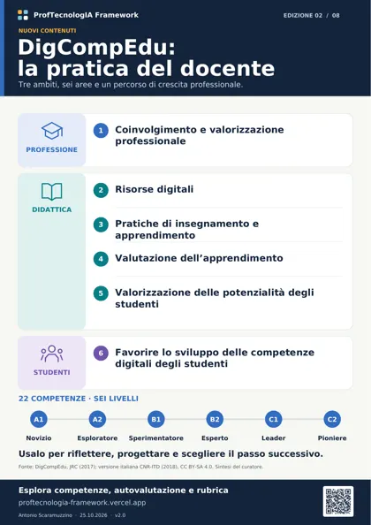
DigCompEdu: la pratica del docente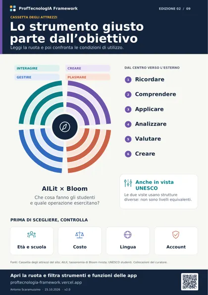
Lo strumento giusto parte dall’obiettivo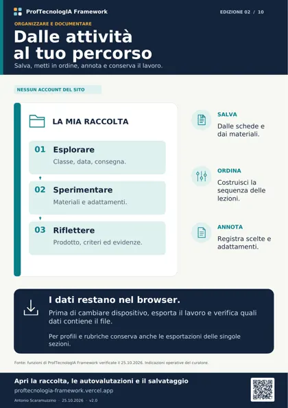
Dalle attività al tuo percorsoIl sito raccoglie i quadri di competenza e li collega a un catalogo di attività. Il percorso tipico, in cinque passi:
Che cosa devi preparare: una lezione, un percorso, una formazione o una verifica delle competenze.
Nel catalogo scegli ordine di scuola e scorciatoie (senza dispositivi, una lezione, educazione civica) o cerca una parola.
In breve, preparazione, svolgimento con i tempi, materiali: il piano di lezione da adattare alla classe.
In «Fonti e framework» trovi le competenze AILit, UNESCO, DigComp e AI4K12 da citare nella progettazione.
Criteri di valutazione e inclusione nella scheda; l'autovalutazione delle sezioni, riassunta in «Il mio percorso» con le attività suggerite.
Ogni sezione ha un'autovalutazione salvata solo nel tuo browser e un glossario comune: le parole sottolineate a puntini aprono la definizione. Il pulsante Cerca in alto (tasto /) trova competenze, attività, termini e materiali in tutto il sito; con Salva le attività e i materiali finiscono in Il mio percorso, dove li metti in ordine e li annoti.
Ogni quadro è navigabile, con schede delle competenze, materiali e licenza della fonte.
Alfabetizzazione all'IA per studenti di primaria e secondaria: quattro ambiti, competenze descritte con conoscenze, abilità e attitudini.
Quattro aspetti su tre livelli di progressione, con obiettivi curricolari, metodi pedagogici e ambienti di apprendimento.
Cinque aspetti su tre livelli, con obiettivi curricolari, obiettivi di apprendimento e attività contestuali per la formazione.
Il quadro europeo delle competenze digitali dei cittadini, nella traduzione italiana ufficiale: enunciati per livello, risultati di apprendimento ed etichette IA in tutte le 21 competenze.
Le linee guida statunitensi AI4K12 per l'IA a scuola: cinque grandi idee e tabelle di progressione per fascia, dall'infanzia alle superiori, con obiettivi, comprensioni durevoli e attività.
Le linee guida di 55 scuole del Friuli Venezia Giulia: sei saggi, dodici competenze operative per primaria, I e II grado, didattica conversazionale, regolamento e scala d'uso 0-4, con correzioni e aggiornamenti normativi al 2026.
I sette rapporti della squadra EDEH sull'IA nell'istruzione, nella versione italiana INDIRE: la triade per/con/sull'IA, le competenze dei docenti, scenari d'uso, governance, rischio ed etica, con correzioni e aggiornamenti al 2026.
Le attività per la classe dei quadri UNESCO e AILit, le esperienze INDIRE, i modelli operativi della Rete FVG e gli scenari d'uso EDEH, con piano di lezione per la secondaria di I grado e variante per il II grado. Classificate secondo AILit, UNESCO, DigComp 3.0, AI4K12 e approccio EDEH e filtrabili per framework, tipologia, livello e modalità.
Un solo glossario per tutto il sito: i termini dei glossari AILit e DigComp 3.0, con la fonte di ogni definizione. Nelle sezioni le parole chiave sottolineate aprono la definizione.
Il quadro europeo sulle competenze digitali dei docenti e dei formatori, nella versione italiana CNR-ITD: le 22 competenze nei sei livelli da Novizio a Pioniere, con autovalutazione, rubrica di progettazione, Piano d'azione 2021-2027 e tutti i materiali del sito CNR.
33 presentazioni con note del relatore per tutti i framework, da sfogliare nel sito o scaricare in PowerPoint e PDF. Sono raccolte, con dispense e documenti originali, nella pagina Materiali.